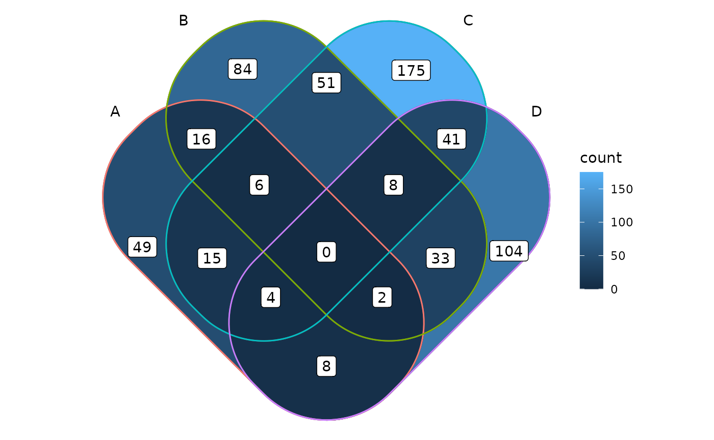
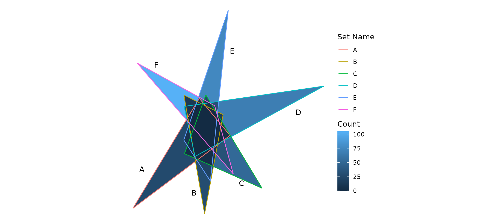

Internal Shapes
The ggVennDiagram package has a set of built-in shapes that are used to plot Venn diagram. These internal data are stored as sys data as a tibble. It can be viewed with ggVennDiagram:::shapes and plotted with the function plot_shapes().
ggVennDiagram:::shapes
#> # A tibble: 104 × 6
#> nsets type shape_id component id xy
#> <dbl> <chr> <chr> <chr> <chr> <list>
#> 1 4 ellipse 401f setEdge 1 <dbl [101 × 2]>
#> 2 4 ellipse 401f setEdge 2 <dbl [101 × 2]>
#> 3 4 ellipse 401f setEdge 3 <dbl [101 × 2]>
#> 4 4 ellipse 401f setEdge 4 <dbl [101 × 2]>
#> 5 4 ellipse 401f setLabel 1 <dbl [1 × 2]>
#> 6 4 ellipse 401f setLabel 2 <dbl [1 × 2]>
#> 7 4 ellipse 401f setLabel 3 <dbl [1 × 2]>
#> 8 4 ellipse 401f setLabel 4 <dbl [1 × 2]>
#> 9 3 circle 301f setEdge 1 <dbl [100 × 2]>
#> 10 3 circle 301f setEdge 2 <dbl [100 × 2]>
#> # … with 94 more rows
library(ggplot2)The format of these shapes data are defined as followings:
a tibble with 6 columns
nsets: number of sets, from 1-7.type: ellipse, circle or triangleshape_id: to separate different shapescomponent: each shape has two components, ‘setEdge’ and ‘setLabel’id: to separate edges/labels of a shape. For example, 4 sets shape will have ids of 1-4.xy: coordinates

Using alternative internal shapes
By default, only the most appropriate shape is used when calling the main function ggVennDiagram(). However, it may be specified in step wise plot which has been described in fully customed plot.
For example:
# Generate example data.
genes <- paste0("gene",1:1000)
set.seed(20210701)
gene_list <- list(A = sample(genes,100),
B = sample(genes,200),
C = sample(genes,300),
D = sample(genes,200))
# construct a Venn object
venn = Venn(gene_list)
data = process_data(venn, shape_id == "401")
ggplot() +
geom_sf(aes(fill = count), data = venn_region(data)) +
geom_sf(aes(color = id), data = venn_setedge(data), show.legend = FALSE) +
geom_sf_text(aes(label = name), data = venn_setlabel(data)) +
geom_sf_label(aes(label = count), data = venn_region(data)) +
theme_void()
Using a novel shape
Besides, user can use a novel shape when knows its coordinates. A possible start is from a SVG shape. Therefore, I would like to show the method of using a novel triangle shape to plot 6-sets Venn diagram in this section.
The triangle is found in WiKi at https://upload.wikimedia.org/wikipedia/commons/5/56/6-set_Venn_diagram_SMIL.svg.
{kind=link}

Since SVG is a XML format file, the coordinates can be found in its content. For this figure, the definition of six triangles are stored in the six object, object1b, object2b, …, object6b. We just need to build set regions by closing the vertexes with the function triangle().
# the vertext coordinates of six triangles
vertex_coordinates <- list(c(-69277,-32868,135580,121186, 70900,199427),
c( 81988,-44426, 38444,206222,121044,165111),
c(203271, 9619, 39604, 82683, 84652,206669),
c(333561,225349, 61764, 76805, 38980,182461),
c(131886,385785, 38136,111491, 94208, 24690),
c(-60184,274046,142476, 39903,103276,183962))
triangles <- lapply(vertex_coordinates, triangle)Likewise, label_position() is used to setup the coordinates of set labels.
position <- tibble::tribble(
~x, ~y,
-50000, 50000,
60000, 0,
160000, 20000,
280000, 170000,
140000, 300000,
-20000, 270000
)
label_position = label_position(position)Then construct a VennPlotData class object with shapes and labels.
shape = VennPlotData(setEdge = triangles,
setLabel = label_position)Now we can join plot data with set and calculated region values with plotData_add_venn().
genes <- paste0("gene",1:1000)
set.seed(20210701)
x <- list(A = sample(genes,100),
B = sample(genes,150),
C = sample(genes,200),
D = sample(genes,250),
E = sample(genes,300),
F = sample(genes,350))
venn = Venn(x)
data = plotData_add_venn(plotData = shape, venn = venn)and plot Venn diagram with ggplot2.
ggplot() +
geom_sf(aes(fill = count), data = venn_region(data)) +
geom_sf(aes(color = name), size = 2, data = venn_setedge(data)) +
geom_sf_text(aes(label = name), data = venn_setlabel(data)) +
theme_void() +
labs(color = "Set Name", fill = "Count")